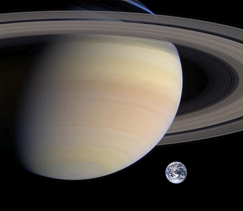
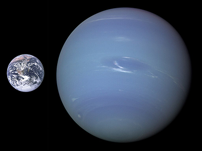

水星（拉丁語：Mercurius），中國古稱辰星；到西漢時期，《史記‧天官書》作者天文學家司馬遷從實際觀測發現辰星呈灰色， 與「五行」學說聯繫在一起，以黑色配水星，因此正式把它命名為水星。
水星是太陽系的八大行星中最小和最靠近太陽的行星。軌道週期是87.9691 地球日，從地球上看， 它大約116天左右與地球會合一次，公轉速度遠遠超過太陽系的其它星球。 水星的快速運動使它在羅馬神話中被稱為墨丘利，是快速飛行的信使神。由於大氣層極為稀薄， 無法有效保存熱量，水星表面晝夜溫差極大，為太陽系行星之最。白天時赤道地區溫度可達432°C， 夜間可降至-172°C。極區氣溫則終年維持在-172°C以下。水星的軸傾斜是太陽系所有行星中最小的 （大約1/30度），但它有最大的軌道偏心率。水星在遠日點的距離大約是在近日點的1.5倍。 水星表面充滿了大大小小的坑穴，外觀看起來與月球和其他衛星相似， 顯示它的地質在數十億年來都處於非活動狀態。
信使號飛越水星的第二張影像。柯伊伯撞擊坑剛好位於中央。廣泛的射紋系統來自頂部附近的北齋撞擊坑。
木星是距離太陽第五近的行星，也是太陽系中體積最大的行星，目前已知有80顆衛星。 天文學家很早就發現了這顆行星，羅馬人以他們的神稱這顆行星為朱庇特。古代中國則稱木星為歲星， 取其繞行天球一周約為12年，與地支相同之故，且產生了歲星紀年法。到西漢時期，《史記‧天官書》 作者天文學家司馬遷從實際觀測發現歲星呈青色，與「五行」學說聯繫在一起，正式把它命名為木星。
木星的主要成分是氫，氦佔十分之一，氦佔了總質量的四分之一；它可能有岩石的核心和重元素，木星是巨行星， 沒有可以明確界定的固體表面。由於快速地自轉，木星的外觀呈現扁球體（赤道附近有輕微但明顯可見的凸起）。 外面的大氣層依緯度成不同的區與帶，在彼此的交界處有湍流和風暴作用著。 大紅斑第一次觀測時間是17世紀使用望遠鏡觀測到，持續旋轉至今。
這是航海家1號太空船於1979年2月25日距離木星920萬公里（570萬英里）飛掠過木星時拍攝的影像。 大紅斑下方白色的橢圓正是直徑大約與地球相同的風暴。

木星的直徑比太陽小一個數量級（×0.10045），但仍比地球大一個數量級（×10.9733）， 大紅斑大約有二到三個地球大（數量級相同) 木星的質量是太陽系其他行星質量總和的2.5倍，由於它的質量是如此巨大， 因此太陽系的質心落在太陽的太陽表面之外，距離太陽中心1.068太陽半徑。 雖然木星的直徑是地球的11倍，體積是地球的1,321倍，但是它的密度很低，質量只是地球的318倍。 木星的半徑是太陽半徑的十分之一，質量是太陽質量的千分之一，所以兩者的密度是相近的。
土星，為太陽系八大行星之一，至太陽距離（由近到遠）位於第六、體積則僅次於木星。 並與木星同屬氣體（類木）巨行星。古代中國亦稱之為鎮星（常寫作填星）。 土星是中國古代人根據五行學說結合肉眼觀測到的土星的顏色（黃色）來命名的 （按照五行學說即木青、金白、火赤、水黑、土黃）。 而其他語言中土星的名稱基本上來自希臘/羅馬神話傳說，例如在歐美各主要語言（ 英語、法語、西班牙語、俄語、葡萄牙語、德語、義大利語等） 中土星的名稱來自於羅馬神話中的農業之神薩圖爾努斯（拉丁文：Saturnus）
土星主要由氫組成，還有少量的氦與微痕元素，內部的核心包括岩石和冰，外圍由數層金屬氫和氣體包覆著。 最外層的大氣層在外觀上通常情況下都是平淡的，雖然有時會有長時間存在的特徵出現。 土星的風速高達1,800公里/時，風速明顯比木星快。土星的行星磁場強度介於地球和更強的木星之間。 土星有一個顯著的行星環系統，主要的成分是冰的微粒和較少數的岩石殘骸以及塵土。 已經確認的土星的衛星有83顆，是八大行星中最多。其中，土衛六（泰坦） 是土星系統中最大和太陽系中第二大的衛星（半徑2575公里，太陽系最大的衞星是木星的木衛三，半徑2634公里） ，比行星中的水星還要大；並且土衛六是唯一擁有明顯大氣層的衛星。還有，土星距離地球13億千米； 地球一天等於23小時56分4.1秒，土星一天等於10小時42分0秒，大約是地球一天的一半。
由於其低密度、高速自轉和流體的可變性，土星的外形呈現為一個橢球體，也就是極軸相對扁平而赤道相對突出， 它的赤道直徑和兩極直徑之比相差大約10%（前者120,536公里，後者108,728公里）。 其它氣體行星雖然也是橢球體，但突出程度都較小。雖然土星核心的密度遠高於水，但由於存在較厚的大氣層， 土星仍是太陽系中唯一密度低於水的行星，它的比重是0.69 公克/公分³。土星的質量是地球的95倍， 相較之下木星質量是地球的318倍，但木星的直徑大約僅為土星的1.21倍。 木星和土星一起在太陽系持有總行星質量的92%。

土星環是太陽系中最引人注目的景象（這張影像是卡西尼太空船在2007年拍攝的） 使用簡單的現代望遠鏡或是品質精良的雙筒望遠鏡就可以看見土星環。 它在赤道上從距離土星6 630 公里延伸至120 700 公里處，但平均的厚度大約只有20米， 主要的成分93%是水冰和少量參雜在其中的複雜有機懸浮物托林，其餘7%是無定型的碳， 它們的大小從塵土的斑點到一輛小汽車的大小都有。 關於土星環的起源有兩種主要的理論。 一種理論是在19世紀提出的起源於洛希極限，認為環原本是土星的一顆衛星， 因為軌道的衰減而落入洛希極限的範圍內，因本身不夠緊密而被潮汐力扯碎（參見洛希極限）， 這種理論又演變出衛星被小行星或彗星撞擊而瓦解的學說。 第二種理論認為它並非來自衛星，而是從形成土星的原星雲中直接形成的。
海王星是太陽系八大行星中距離太陽最遠的，體積是太陽系第四大，但質量排名是第三。 海王星的質量約為地球的17.147倍，而性質極為類似的天王星密度較低，質量只約為地球的14.536倍。 海王星以羅馬神話中的尼普頓（Neptunus）命名，因為尼普頓是海神王，所以中文譯為海王星。 天文學的符號Astronomical symbol for Neptune.（♆，Unicode編碼U+2646）， 是希臘神話的海神波塞頓使用的三叉戟。
海王星在1846年9月23日被發現， 是唯一利用數學預測而非有計畫的觀測發現的行星。 天文學家利用天王星軌道的攝動推測出海王星的存在與可能的位置。 迄今只有航海家2號曾經在1989年8月25日拜訪過海王星。2003年， 美國國家航空暨太空總署提出有如卡西尼-惠更斯號科學水準的海王星軌道探測計畫， 但不使用熱滋生反應提供電力的推進裝置；這項計劃由噴射推進實驗室和加州理工學院一起完成。
以其1.0243×1026 kg的質量，海王星是介於地球和巨行星（指木星和土星）之間的中等大小行星： 它的質量既是地球質量的17倍，也是木星質量的1/18。因為它質量較典型類木行星小，而且密度、組成成份、 內部結構也與類木行星有顯著差別，海王星和天王星一起常常被歸為類木行星的一個子類：冰巨星。 在尋找太陽系外行星領域，海王星被用作一個通用代號，指所發現的有著類似海王星質量的系外行星， 就如同天文學家們常常說的那些系外「木星」。
在高海拔處，海王星的大氣層80%是氫和19%是氦 ，也存在著微量的甲烷。 主要的吸收帶出現在600奈米以上波長的紅色和紅外線的光譜位置。與天王星比較，它的吸收是大氣層的甲烷部分， 使海王星呈現藍色的色調[19]， 雖然海王星活潑的淡青色不同於天王星柔和的青色， 由於海王星大氣中的甲烷含量類似於天王星，一些未知的大氣成分被認為有助於海王星的顏色。